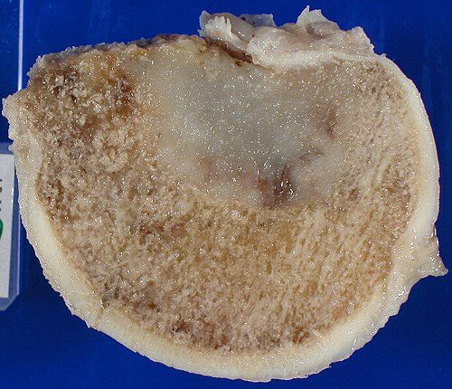

General information only. It does not replace advice from your care team and should not be used to choose a treatment.


At a glance
| How common | Up to 70% of patients with advanced breast or prostate cancer |
| Types | Osteolytic (destroy bone: breast, lung, kidney, myeloma) and osteoblastic (form bone: prostate) |
| Complications | Pain, fractures, spinal cord compression, high calcium |
| Treatment | Bone-protecting drugs, radiotherapy, surgery, radiopharmaceuticals, treatment of the original cancer |
Symptoms and emergencies
- Persistent bone pain, worse at night.
- Fractures with minimal trauma.
- Spinal cord compression: worsening back pain, weakness or numbness in the legs, problems passing urine or controlling the bowels. It is an emergency: it needs MRI, dexamethasone and radiotherapy or surgery within hours to prevent paralysis.
- Hypercalcaemia: thirst, confusion, constipation, nausea.
Diagnosis
Bone scan, CT, MRI (of the spine if compression is suspected), PET-CT or PSMA PET for prostate.
Treatment
- Treatment of the original cancer (hormone therapy, chemotherapy, targeted therapy).
- Zoledronic acid or denosumab: reduce fractures and other complications. They require a prior dental check because of the risk of osteonecrosis of the jaw, plus calcium and vitamin D.
- Radiotherapy: a single 8 Gy session relieves pain in 60-70%; stereotactic radiotherapy for single or spinal metastases.
- Surgery to fix bones at risk of fracture; cementoplasty and vertebral kyphoplasty.
- Radiopharmaceuticals: radium-223 (prostate), lutetium-177-PSMA.
- Stepwise pain relief and palliative care.
See also: Prostate cancer, Breast cancer, Multiple myeloma, Radiotherapy, Palliative care.
History · Medicapedia
Bone metastases in the history of medicine
How it was discovered, who studied it and how its treatment changed over the centuries, told on Medicapedia, our sister site on the history of medicine.
Read the history on Medicapedia ↗Sources
- Coleman R, et al. Bone health in cancer: ESMO Clinical Practice Guidelines. Ann Oncol. 2020;31:1650-1663.
- Parker C, et al. Alpha emitter radium-223 and survival in metastatic prostate cancer (ALSYMPCA). N Engl J Med. 2013;369:213-223. doi:10.1056/NEJMoa1213755
- Hoskin PJ, et al. Effect of single-fraction vs multifraction radiotherapy on ambulatory status among patients with spinal canal compression from metastatic cancer (SCORAD III). JAMA. 2019;322:2084-2094. doi:10.1001/jama.2019.17913